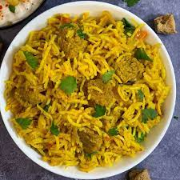

Soya Biryani

A delicious pressure cooked biryani with soya chunks and eggplant that will leave you wanting more.
Ingredients
Initial Spices
- 1 tsp cumin seeds
- 5 green cardamoms
- 2 black cardamoms
- 7 black cloves (+ 6 extra)
- 1 cinnamon stick
- 1 star anise
- 5 bay leaves (+ 6 extra)
- 6 whole black peppers
- 1/2 tsp heeng
Remaining Spices
- 1 tsp garam masala
- 1 tsp tumeric power
- 1 tsp red chili powder
- 1 tsp salt
- 2 tsp ginger garlic paste
Everything else
- 3 medium sized red onions, thinly sliced
- 1 large egglant, medium-sized cubes
- 5 thai chilies, sliced in half
- 6 cups of rice, washed
- 2 tsp ghee
- 2 tsp vegetable oil
- 12 oz soya chunks
Steps
- Soak soya chunks in warm water to hydrate them. Leave them submerged and set this aside.
- Saute all the intial spices (don't include the extra) and the thai chilies with the ghee and oil.
- Once the cumin seeds start poping, we can add the onions and saute them.
- Going back to our soaked soya chunks, we squeeze all the water from them.
- When onions start to look brown/fried, we add the remaining spices, the squeezed soya chunks,
our cubed egglant, and cook for 5 minutes.
- We now begin to add layers of rice topped with extra: 3 black cloves, 1/2 tsp ghee, and 2 bay leaves. We
also sprinkle each layer with a litle extra of garam masala, biryani masala, salt, and red chili powder.
- Pour water to until the rice is covered and pressure cook accordingly until rice is cooked.